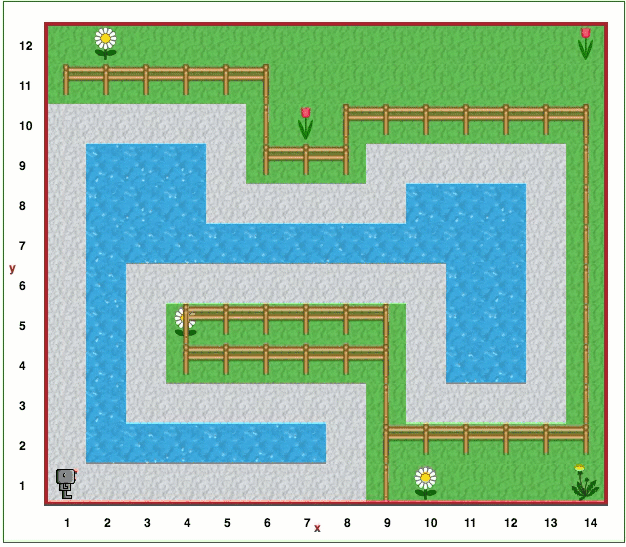

Šiame uždavinyje turėsite panaudoti daugelį ankstesniuose etapuose įgytų žinių. Gali būti, kad bus naudinga prisiminti 14 lygio sprendimą.
Atidarykite Robotuko aplinkos 19 lygį.
Robotukas rado daug įdomesnį ežerą savo pasivaikščiojimui.
Pamėginkite pritaikyti 14 lygio sprendimą, kad jis veiktų su šiuo nauju ežeru. Robotukas vėl turėtų padėti bananą pradinėje pozicijoje ir toliau eiti ežero pakraščiu (šį kartą - žvyrkeliu), kol vėl suras bananą. Šį kartą sekti sieną bus sudėtingiau, bet tai ir yra iššūkis!
Lygis 18: Derliaus nuėmimas Turinys Lygis 20: Dar viena lietinga dienaDėmesio
Jūsų sprendimas, skirtas šiam pasauliui, turėtų veikti ir 14 lygio pasaulyje!